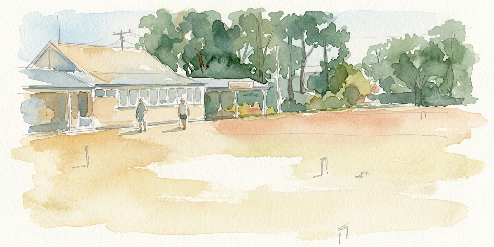
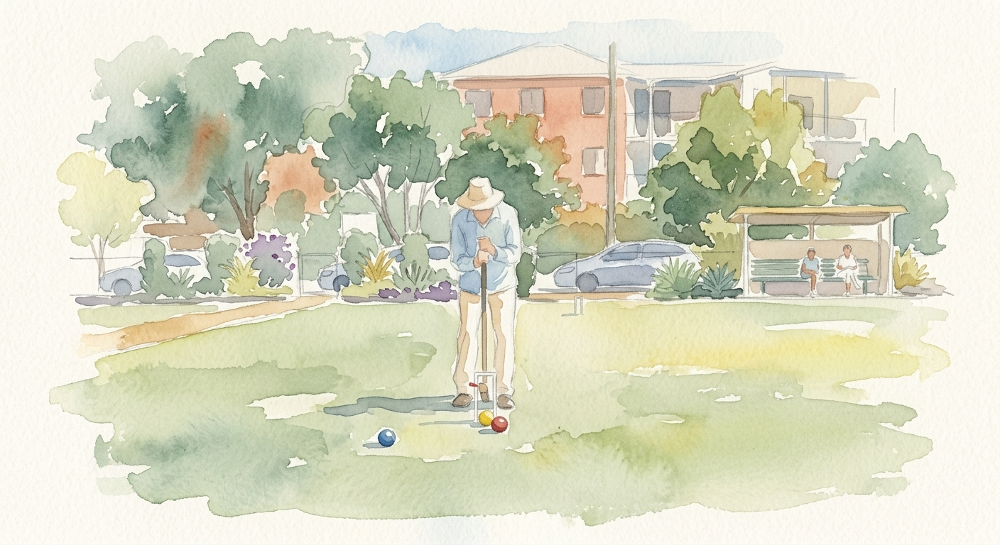
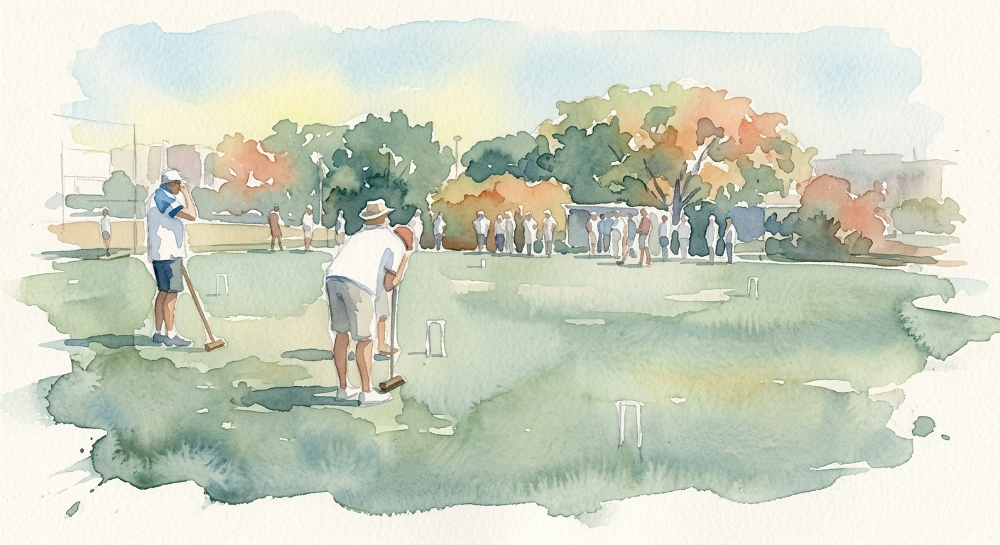
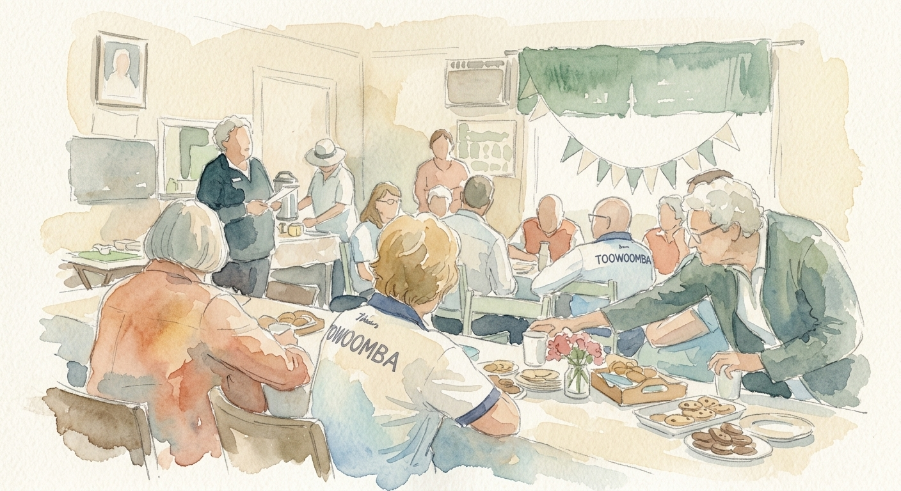
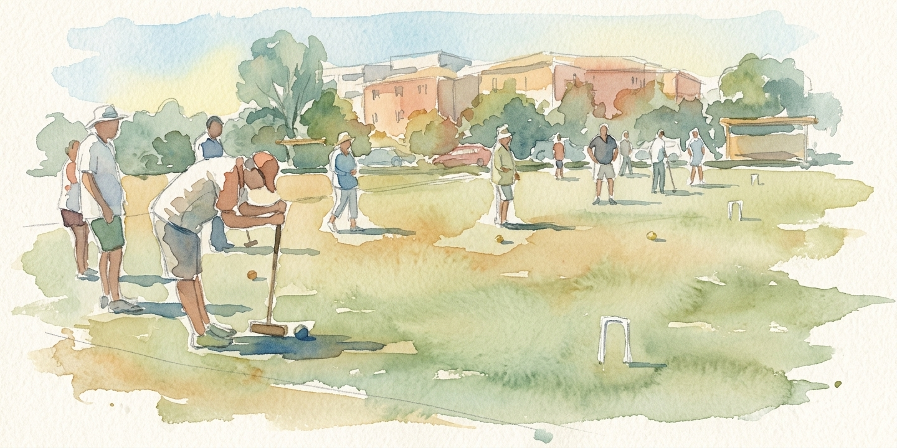

A plain-English companion to the CAQ Filming and Photography Policy. Ten common questions, answered for committees, secretaries, and members.

Companion to the CAQ Filming & Photography Policy v1.0 · Illustrations by CroquetClaude
Most of what happens with cameras at a croquet club is fine, friendly, and uncomplicated. A member takes a picture of their friend lining up a hoop. A grandkid films Nana winning a game. The committee posts a Facebook update with a few smiling faces. None of this needs paperwork.
The reason this guide exists is for the rare moments when something does need to be sorted — a parent who wants their child kept off the website, a visitor with a camera in places they shouldn't be, a livestream that no one quite signed off on. This document covers those moments in plain language. The full policy sits behind it for when you need the formal answer.
— CroquetClaude, on behalf of CAQ
The Everyday Stuff
Question One
Can members take photos at our club?
Yes — for personal use, no permission needed.
Members can take photos or short videos for their own use — to share with family, for personal social media, or just to remember an event. They only need to respect other members. If someone asks not to be photographed, be considerate.
The rules that apply to everyone are simple: no filming in change rooms or toilets, ever, and don't film in a way that's intended to embarrass or mock anyone.
Question Two
Can we film coaching sessions?
Yes — and it's encouraged.
Coaches and players can film sessions for development purposes — reviewing technique, sharing with a coach for feedback, and so on. For anything that will be posted publicly, on a club website, YouTube, or Facebook, participants should be told before filming starts.
If your club is producing coaching content for public audiences, tell people what it's for before you hit record. That's all that's needed.

A coaching session can be filmed for the player's own development without ceremony — public posting is the point at which a quick word is needed.
Visitors, Spectators & Livestreaming
Question Three
What about visitors and spectators who bring cameras?
They can take personal photos — your club can set conditions on anything beyond that.
As a private venue, your club can set and enforce rules about photography for everyone on your property — members and non-members alike. For those conditions to be enforceable, two things need to be true:
Your club has formally adopted this policy.
The conditions are displayed — a notice at the entrance or on your website.
If someone is filming in a way that's intrusive or commercial without permission, you can ask them to stop and cite the club's conditions of entry. If they refuse, you can ask them to leave the premises.
People filming from a public footpath or road outside your boundary are outside your jurisdiction.
As a private venue, your club has the same authority over conditions of entry as any other private property.
Question Four
Can we livestream our club tournaments?
Yes — with a couple of steps first.
For club events: get permission from your club committee and notify players before the event.
For CAQ state championships and other CAQ-run events: the streaming organiser needs written permission from the CAQ Events Manager (or equivalent). This protects both the club and the players, and it's a straightforward process for legitimate sporting broadcasts.
The one hard rule: players cannot livestream themselves during competitive play using their own phone or action camera.

Club tournaments can be streamed with committee approval and player notification. State championships need a written sign-off from the CAQ Events Manager.
When Children Are Involved
Question Five
What do we need to do about children?
Get written consent from parents before using any images publicly.
If you want to use photos or video of children — anyone under 18 — on your website, social media, newsletters, or anywhere public, you need written consent from a parent or guardian first. Use the CAQ Consent Form (companion document).
This applies to photos where a child is the focus or is clearly featured. A wide-angle club photo where a child appears in the background does not require consent.
A wide-angle group shot is fine. A close-up of one child without parents around is not.
For personal snapshots at club events
Members taking a photo of the whole group, including some kids, is generally fine. The rules that matter are:
Don't single out a child and photograph them alone without a parent nearby.
Don't post images of children on public social media without parental consent.
Don't name or identify a child in a publicly shared image without consent.
If a parent asks you to stop photographing their child, stop immediately.
For official photographers
Anyone you've hired or appointed to document an event must hold a current Working With Children Check, and must remain in a visible public area at all times.
Signage & Take-downs
Question Six
Does our club need to put up signs?
It's recommended — and CAQ will provide a template.
Signage at the entrance to your clubhouse or greenside area lets visitors know that photography conditions apply. It makes your conditions of entry clear and enforceable.
CAQ will develop a standard sign for clubs to use. In the meantime, a simple handwritten or printed notice at the entrance is better than nothing — something like:
Sample notice
This is a private venue. Photography and filming is permitted for personal use. Commercial filming and livestreaming require prior permission from the club. Please see the club secretary.
Question Seven
What if someone asks us to take down a photo?
Take it seriously, investigate quickly, and act within fourteen days.
If a member or visitor contacts you asking for an image to be removed:
Acknowledge their request promptly.
Check where the image appears — club website, Facebook, newsletter, and so on.
If the image was used without consent or in a way that breaches the policy, remove it as soon as practicable.
Let them know what you did.
If you're not sure whether a take-down is warranted, contact CAQ's Member Protection Officer for advice. The fourteen-day timeframe is a reasonable target. In practice, most take-downs from social media or a website can happen on the same day.
When Things Get Difficult
Question Eight
What if someone is filming and won't stop when asked?
Follow this sequence.
Ask politely. Remind them of the club's policy — your conditions of entry.
Ask again if needed. Make clear it's a club rule and they need to comply.
Ask them to leave. As a private venue, the club can require anyone to leave for breaching conditions of entry.
Escalate. If the filming appears illegal — in change rooms, of children in an inappropriate way — call Queensland Police immediately and contact CAQ's Member Protection Officer.
Don't try to physically take someone's phone or camera. Document what happened — make a note, take names of any witnesses — and report to CAQ if the situation escalates.
The club can require anyone to leave for breaching conditions of entry. Phones and cameras stay with their owners.
If you're not sure whether to escalate
Call CAQ's Member Protection Officer before the situation gets worse. They will help you decide whether the matter is a club issue, a CAQ issue, or a Queensland Police issue.
Using Photos & the Forms
Question Nine
Can we use photos on our club website and Facebook?
Yes — for adult members, with reasonable care. For children, you need consent.
For adult members: participating in club events constitutes general consent for the club to use photos in club promotional contexts — website, Facebook, newsletter. Members who have explicitly opted out must be respected.
For children: you need written parental consent before using any photos publicly. Keep a copy of the consent on file.

Group photos at social events are part of normal club life — adult members are taken to consent by participation; children are not.
Good practice for every photo
Make sure the context is appropriate and dignified.
If someone is visibly distressed or in an embarrassing situation in a photo, don't use it.
If someone asks you not to use their image, respect that request.
Question Ten
Where do I find the consent form?
It's a companion document to the policy.
The CAQ Filming and Photography Consent Form covers adults, parents or guardians consenting for children, and opt-out options.
For CAQ events, the Events Manager will have copies. For club use, contact the CAQ Secretary, or download from the CAQ website once the policy is published.
More questions?
Speak to the CAQ Secretary or the Member Protection Officer.

CAQ Secretary
First port of call for general policy questions, consent form requests, and signage templates.
Contact details on the CAQ website.
Member Protection Officer
For take-down requests, complaints involving children, and any incident that crosses into legal territory.
Contact details on the CAQ website.
The Three Documents
CAQ Filming and Photography Policy v1.0 — the formal document, fourteen sections, full nuance.
CAQ Filming and Photography Consent Form — covers adults, children, opt-outs, and court-order disclosure.
This guide — the everyday "what do I actually need to know" companion.